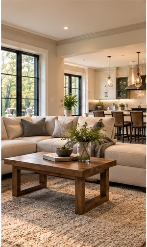

Additions / Renovation Journal
Renovation Planning for Multigenerational Living
Balance independence, accessibility, privacy, and shared space.
Retrospective topic: October 2025 · Oakwaters Journal

Households with different generations often need both connection and separation.
Begin with the way you live
Discuss bedroom locations, bathrooms, kitchen access, and how circulation will work for people with different mobility needs.
Before selecting finishes, take measurements and note the everyday frustrations you want the renovation to resolve. A clear understanding of what is not working today helps keep later choices grounded in practical outcomes.
Consider the details behind the design
Review entry thresholds, door widths, lighting, and whether future adaptations can be accommodated without major rebuilding.
It is also worth discussing the sequence of work. Some decisions affect framing, rough-in, or ordering and become expensive to revise once construction is underway. Confirming those details early gives the design room to develop without unnecessary rework.
Think about the finished home
Planning for flexibility can extend the useful life of a home.
Bring inspiration photographs, approximate measurements, and a realistic description of your priorities to the first conversation. A contractor can then help identify the questions that need to be resolved before the scope and budget are finalized.
Planning a renovation?
Explore what is possible for your home with Oakwaters Construction.
Discuss Your Project →This article is part of a retrospective topic collection. It is not a record of work performed or an assertion of a historical publication date. Building requirements vary by project and municipality.